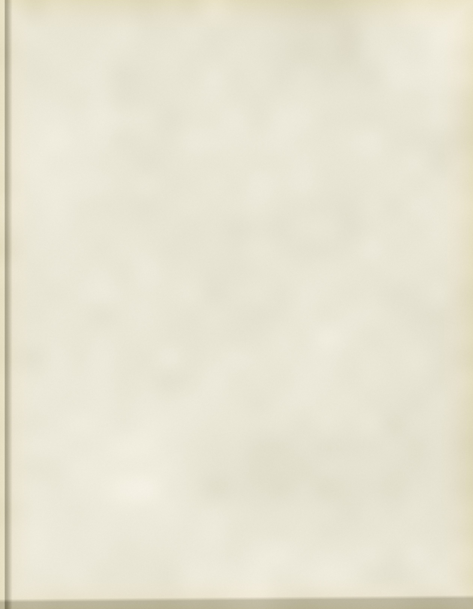
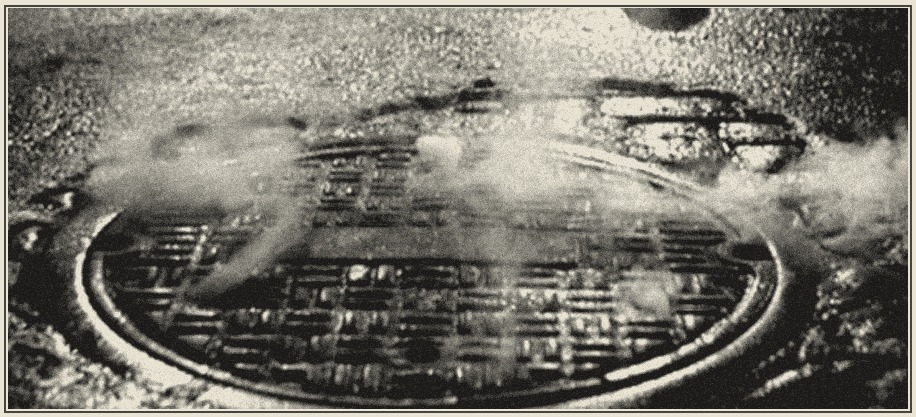

Soup kitchen run by A.J. Shepherd.
Most of you call me the Reverend.
Chuck braised for hours with carrot, celery, onion and potato. Italian bread to mop it up.
A pull-apart batch, baked this morning with sharp cheese on top. Good for dunking.
Little rounds of tomato sauce and mozzarella, pepperoni laid on in a crosshatch.
Cake rings made with apple juice boiled down thick, fried and rolled in cinnamon sugar.
Lime cordial and tonic water, poured over a glass full of ice.
Black, all day. Milk and sugar on the counter. 25 cents in the jar if you can spare it.

It is no place to sleep. If you need somewhere warm tonight, come and ask.
Some of our regulars from down below have not come up for a meal in weeks. If you have seen them, or know where they went, please tell me. Captain Bosch at the precinct is asking too.